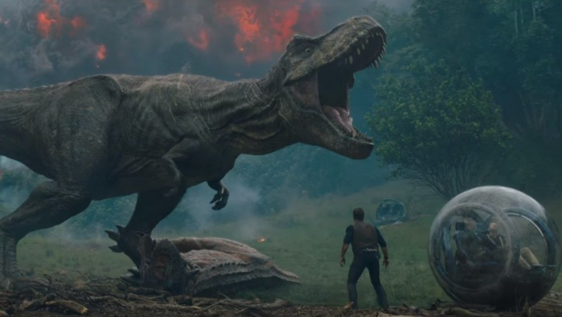

Expertos en ingeniería genética del británico Instituto Adam Smith predicen que los dinosaurios pueden regresar a la Tierra y convivir con los humanos. Después de estudiar cómo las aves modernas tienen un código genético similar al de los dinosaurios, estiman que los científicos están en condiciones de dar marcha atrás al reloj de la evolución y reintroducir criaturas extintas y prehistóricas, informa el portal británico Express.